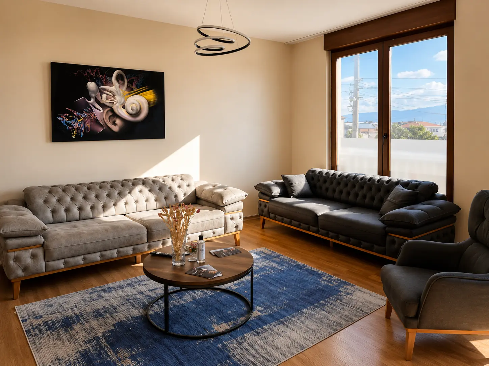
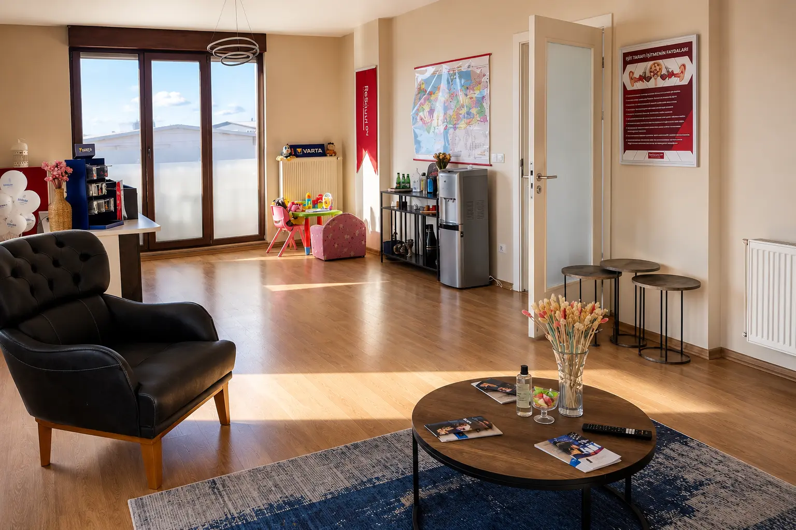
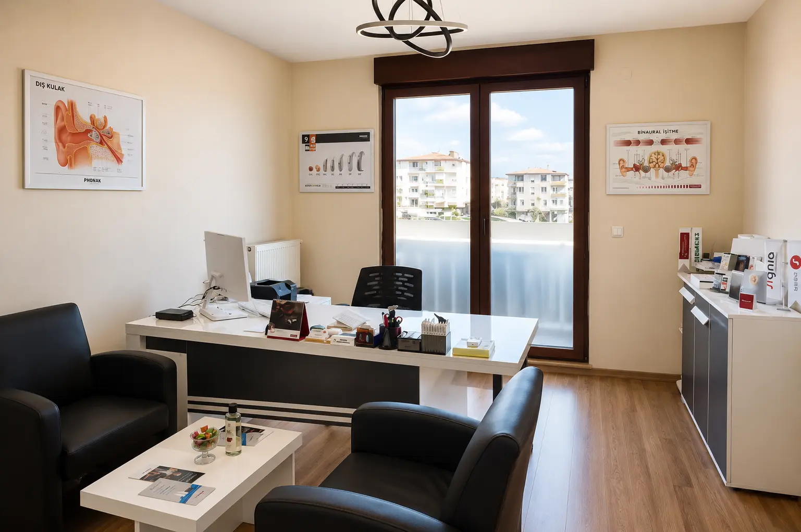
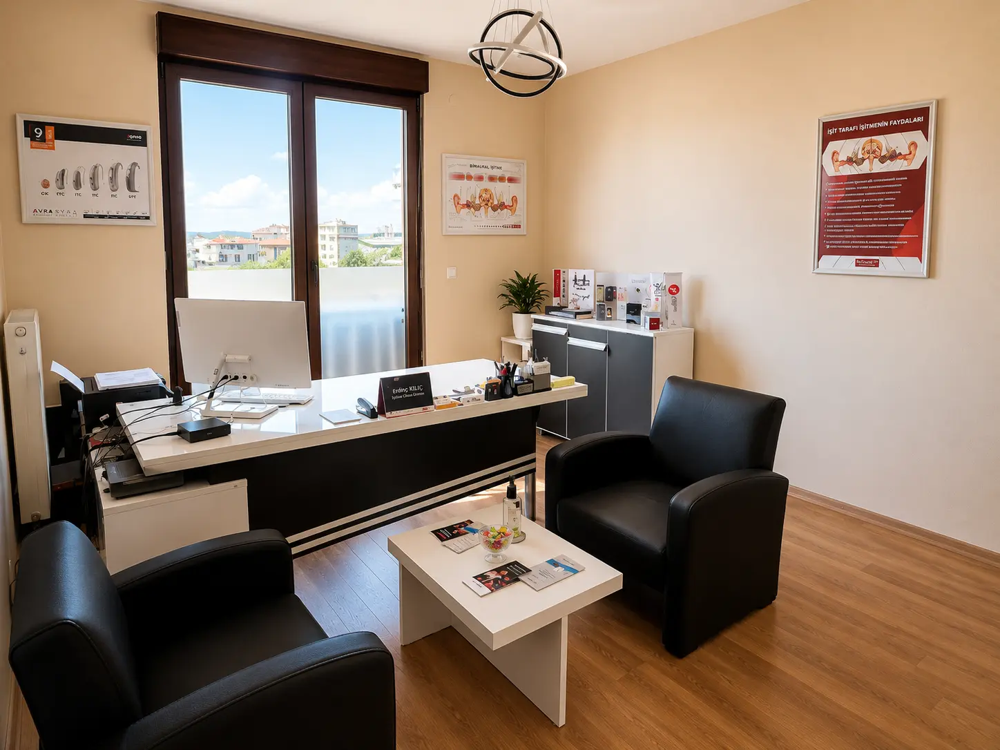
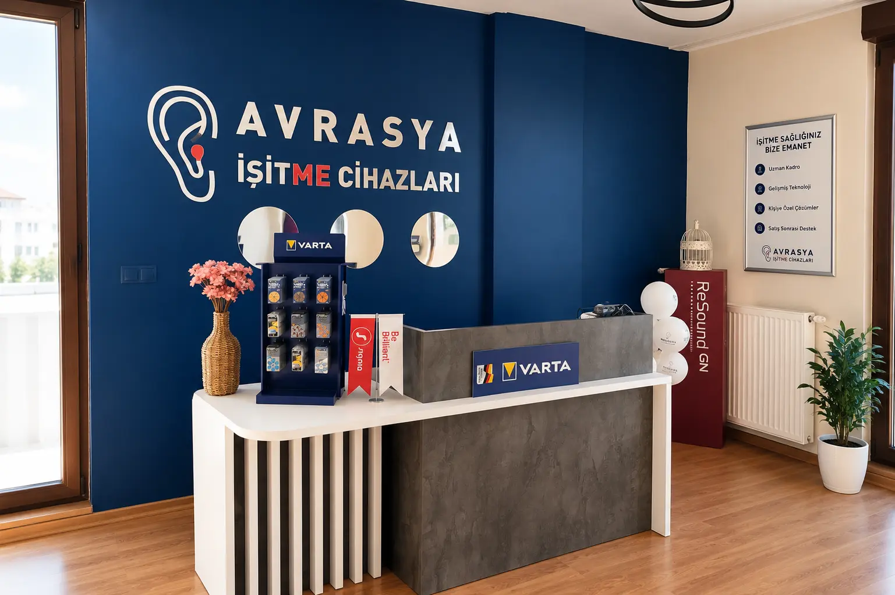

Darıca, Gebze, Çayırova ve Dilovası bölgelerinde SGK anlaşmalı işitme cihazı, ücretsiz işitme testi, cihaz uygulaması, teknik servis ve satış sonrası destek hizmetleri sunuyoruz.

İşitme seviyenizi profesyonel ekipmanlarla değerlendiriyoruz.
Karar vermeden önce işitme cihazını deneyimleme imkanı.
SGK desteğine uygun işitme cihazı çözümleri sunuyoruz.
Cihaz bakım, ayar ve teknik destek hizmetleriyle yanınızdayız.
Dünya'nın önde gelen işitme cihazı markaları ile hizmet veriyoruz.
Danimarka teknolojisi ile doğal ve net işitme deneyimi.
İleri bağlantı özellikleri ve güçlü performans.
Şık tasarım ve gelişmiş işitme teknolojileri.
Doğal ses kalitesi ve yüksek kullanıcı memnuniyeti.
Yapay zeka destekli yenilikçi işitme çözümleri.
Modern teknolojiler ile konforlu işitme deneyimi.
İşitme seviyenizi profesyonel ekipmanlarla değerlendiriyoruz.
Size en uygun cihazın seçimi ve kişiye özel ayarlanması.
Konforlu kullanım için kişiye özel kulak kalıbı çözümleri.
Bakım, temizlik, onarım ve performans kontrolleri.
Mevcut cihazınızın işitme seviyenize göre optimize edilmesi.
Cihaz kullanım süreci boyunca profesyonel destek.
⭐ 5.0 Müşteri Memnuniyeti • Gerçek Danışan Deneyimleri
İşitme cihazı seçiminde çok yardımcı oldular. Süreç boyunca her sorumuza cevap verdiler.
⭐ Google Yorumlarını İnceleBabam için cihaz aldık. İlk günden itibaren ilgileri ve destekleri çok iyiydi.
⭐ Google Yorumlarını İnceleİşitme testi ve cihaz ayarlama süreci son derece profesyoneldi. Tavsiye ederim.
⭐ Google Yorumlarını İnceleSGK kapsamında işitme cihazı desteğinden yararlanabilirsiniz. Uygunluk durumunuz ve süreç hakkında ücretsiz bilgi almak için bizimle iletişime geçebilirsiniz.
SGK Desteği Hakkında Bilgi AlYıllık Sektör Deneyimi
Danışan Deneyimi
Anlaşmalı Hizmet
Dünya Markası
Avrasya İşitme merkezimizden gerçek görüntüler.




Merkezimiz Darıca'da olup Kocaeli ve İstanbul Anadolu Yakası'nın birçok bölgesinden danışanlarımıza hizmet vermekteyiz.
İşitme testi, cihaz uygulaması ve teknik servis hizmetleri.
SGK anlaşmalı işitme cihazı çözümleri ve danışmanlık.
Ücretsiz ön değerlendirme ve cihaz deneme hizmetleri.
İşitme sağlığı alanında profesyonel destek ve takip.
İşitme testi, cihaz uygulaması ve satış sonrası destek hizmetleri.
Profesyonel işitme değerlendirmesi ve işitme cihazı çözümleri.
SGK anlaşmalı işitme cihazları ve uzman danışmanlık hizmetleri.
İşitme sağlığı alanında kapsamlı destek ve takip hizmetleri.
Darıca Ağız ve Diş Sağlığı Merkezi Karşısı
Fevziçakmak Mah. Dr. Zeki Acar Cad.
No:77/7 Asansör Kat:1
Darıca / Kocaeli
Avrasya İşitme olarak Darıca'da işitme kaybı yaşayan bireylere profesyonel işitme testi, işitme cihazı uygulaması, teknik servis ve satış sonrası destek hizmetleri sunuyoruz. SGK anlaşmalı işitme cihazı çözümlerimiz sayesinde danışanlarımızın ihtiyaçlarına uygun ekonomik ve kaliteli seçenekler sunmaktayız.
Merkezimiz Darıca Ağız ve Diş Sağlığı Merkezi karşısında yer almakta olup Gebze, Çayırova, Dilovası, Tuzla ve Pendik bölgelerinden gelen danışanlarımıza da hizmet vermektedir. İşitme kaybı seviyesine uygun cihaz seçimi, ücretsiz ön değerlendirme ve kişiye özel ayarlama hizmetleri ile işitme kalitesini artırmayı hedefliyoruz.